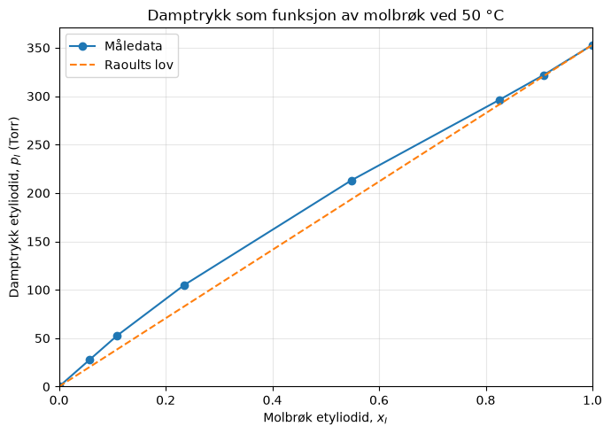
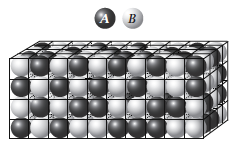
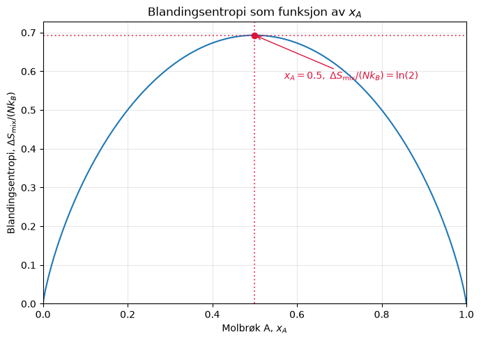

Uke 8 – Løsninger og blandinger#
Oppgave 1. Ideelle gasser og ideele blandinger.#
a) Som repetisjon, hva er en ideell gass? Hva ville \({\Delta} H_{mix}\) vært for blanding av to ideelle gasser?
Svar En ideell gass er en gass uten interaksjoner mellom molekylene, der vi regner hvert molekyl som et lite punkt uten utstrekning. \(\Delta H_{mix}\) ville vært \(0\) for en blanding av to ideelle gasser siden det ikke er noen intermolekylære interaksjoner mellom molekylene.
b) Hva er en ideell væske? Hva er \({\Delta } H_{mix}\) for en ideell væske?
Svar Siden væsker har interaksjoner mellom seg, kan man ikke si at intermolekylære interaksjoner er lik \(0\). Det man gjør isteden er å sette de til en gjennomsnittlig styrke. Det som menes med det er at interaksjonene mellom stoffene A og B er lik interaksjonene mellom A og A, og B og B. \(\Delta H_{mix}\) er fortsatt \(0\) når man blander to ideelle væsker. Det betyr at det ikke er noen forskjell i intermolekylære bindinger mellom molekylene i væsken. En homogen, helt ren væske vil derfor alltid være ideell, fordi alle interaksjonene mellom molekylene er de samme.
c) Hva er drivkraften for miksing av to ideelle væsker?
Svar Drivkraften er entropisk: det er statistisk mye mer sannsynlig (flere mikrotilstander) at molekylene er tilfeldig blandet enn separert, noe som gir \(\Delta S_{mix} > 0\) og dermed \(\Delta G_{mix} = \Delta H_{mix} − T\Delta S_{mix} < 0 \rightarrow\) spontan blanding.
d) Hva er henholdsvis Raoult og Henry’s lov? Når gjelder hver av de, når bruker man hvilken?
Svar Raoults lov sier at det partielle trykket av en komponent over en blandingsløsning som inneholder denne komponenten er lik molfraksjonen av komponenten i blandingen multiplisert med damptrykket til den rene komponenten:
For idelle løsninger gjelder Raoults lov uansett hvor mye eller lite det er av komponenten i blandingen. For reelle løsninger er Raoults lov en god tilnærming når det aller meste av løsningen består av den gitte komponenten, altså når \(x_i\rightarrow 1\).
Henry’s lov sier at det partielle trykket av en komponent over en blandingsløsning som inneholder denne komponenten er proposjonal med molfraksjonen av denne komponenten i løsningen:
hvor \(K_H\) er Henry’s konstant som blir bestemt empirik. For reelle vesker gjelder kun når det er veldig lite av komponenten, altså når \(x_i\rightarrow 0\). For ideelle løsninger vil dette gjelde for all verider av \(x_i\) og da blir Henry’s lov identisk med Raults lov, og \(K_H=p_i^*\).
e) Når sier man at en væskeblanding er ideell, utifra Raoults lov? Kom med et par eksempler på systemer med to væsker som oppfører seg tilnærmet ideelt.
Svar En væskeblanding sies å være ideell dersom hver komponent følger Raoults lov over hele sammensetningsområdet. Altså når komponentene er så kjemisk/strukturelt like at A–A, B–B og A–B-interaksjoner er tilnærmet identiske, og det partielle trykket av hver komponent er gitt ved \(p_i=x_i\cdot p_i^*\). For at dette skal være tilfelle bør de to væskene være mest mulig like, og eksempler vi kan tenke oss er benzen og toluen, n-heptan og n-heksan, etyl-bromide og etyl-jodid, klorbenzen og brombenzen.
f) Se for dere et stort volum med vann ved \(25 ^{\circ} C\) (\(10 \, L\) for eksempel). Når \(1 \, mol\) vann videre tilsettes så øker volumet med \(18 \, cm^3\), og man sier derfor at det molare volumet til vann er \(18 \, cm^3\). Men når man tilsetter \(1 \, mol\) vann til et stort volum med etanol (\(10 \, L\) for eksempel) ved \(25 ^{\circ} C\) øker volumet kun med \(14 \, cm^3\). Hvorfor er det slik? Hva kommer dette av?
Svar Vann og etanol danner gunstige interaksjoner, blant annet hydrogenbindinger, og molekylene kan pakkes mer effektivt i blandingen enn i de rene væskene. Derfor oppstår volumkontraksjon ved blanding, og vannets partielle molare volum i etanol er bare omtrent \(14 \, cm^3\).
g) Er systemet i f) en ideell væske?
Svar Nei, en blanding av etanol og vann er ikke en ideell væske. Interaksjonene mellom vann og vann, vann og etanol, og etanol og etanol er forskjellige. Antall hydrogenbindinger som kan dannes imellom speciene varierer.
h) Hva er partielt molart volum? Hvordan vil det være for en ideell væske?
Svar Det partielle molare volumet til komponent \(i\), er den infinitesimale endringen i blandingens totale volum per infinitesimal endring i stoffmengden av komponent \(i\), ved konstant temperatur, trykk og mengde av de øvrige komponentene. Partielt molart volum kan variere med sammensetning av blandingen. For en ideell væske vil det partielle molare volumet være lik som for de rene stoffene. I eksempelet med vann og etanol ville det vært \(18 \text{cm}^3\).
Oppgave 2#
En blanding består av etyliodid og etylacetat. Damptrykket (\(p_I\)) av etyliodid(I) over blandingen som funksjon av molbrøken \(x_I\) er ved \(50.0 °C\) målt til:
(\(x_I\)) |
(\(p_I\)) / \(torr\) |
|---|---|
1.00 |
353 |
0.909 |
322 |
0.825 |
296 |
0.548 |
213 |
0.235 |
105 |
0.109 |
52.7 |
0.0579 |
28.0 |
0.0 |
0 |
a) Tegn \(p_I\) som funksjon av \(x_I\). Følger denne damptrykkskurven Raoults lov? Hvorfor følger den, evt hvorfor følger den ikke?
Svar
\(p_{I}(\text{Raoult}) = x_{I} \times 353 \ \text{Torr}\)
\(x_{I}\) |
Raoult-prediksjon \(\text{[Torr]}\) |
Faktisk \(p_{I} \ \text{[Torr]}\) |
Forhold |
|---|---|---|---|
\(1.00\) |
\(353\) |
\(353\) |
\(1.000\) |
\(0.909\) |
\(320.9\) |
\(322\) |
\(1.003\) |
\(0.825\) |
\(291.2\) |
\(296\) |
\(1.016\) |
\(0.548\) |
\(193.4\) |
\(213\) |
\(1.101\) |
\(0.235\) |
\(83.0\) |
\(105\) |
\(1.266\) |
\(0.109\) |
\(38.5\) |
\(52.7\) |
\(1.370\) |
\(0.0579\) |
\(20.4\) |
\(28.0\) |
\(1.370\) |
Ved høy \(x_{I}\) (nær \(1.00\)) følger damptrykket Raoults lov godt (avvik \(< 2\%\)). Ved lav \(x_{I}\) er avviket betydelig (opp mot \(37\%\)) — løsningsmiddelet følger Raoults lov nær \(x_{I} = 1\), mens den fortynnede komponenten følger Henrys lov.
b) Finn Henrys lov konstanten \(K_I\) for etyliodid.
Svar
\(K_{I} = \frac{p_{I}}{x_{I}}\)
Ved lave konsentrasjoner:
\(x_{I} = 0.0579: \quad K_{I} = \frac{28.0}{0.0579} \approx 483.6 \ \text{Torr}\)
\(x_{I} = 0.109: \quad K_{I} = \frac{52.7}{0.109} \approx 483.5 \ \text{Torr}\)
\(K_{I} \approx 484 \ \text{Torr} \quad (x_{I} \to 0)\)
import matplotlib.pyplot as plt
import numpy as np
# Måledata fra Oppgave 4
x_I = np.array([0.0000, 0.0579, 0.109, 0.235, 0.548, 0.825, 0.909, 1.000])
p_I = np.array([0.0, 28.0, 52.7, 105.0, 213.0, 296.0, 322.0, 353.0]) # Torr
# Raoults lov for etyliodid, med p_I* = 353 Torr
x_raoult = np.linspace(0, 1, 100)
p_raoult = 353 * x_raoult
plt.figure(figsize=(7, 5))
plt.plot(x_I, p_I, 'o-', label='Måledata')
plt.plot(x_raoult, p_raoult, '--', label='Raoults lov')
plt.xlabel(r'Molbrøk etyliodid, $x_I$')
plt.ylabel(r'Damptrykk etyliodid, $p_I$ (Torr)')
plt.title('Damptrykk som funksjon av molbrøk ved 50 °C')
plt.xlim(0, 1)
plt.ylim(bottom=0)
plt.grid(True, alpha=0.3)
plt.legend()
plt.tight_layout()
plt.show()

Oppgave 3: Termodynamikken til ikke-ideelle løsninger#
I denne oppgaven skal vi se på blandingsentalpi og blandingsentropi for ikke-ideele væsker, fra et mikroskopisk perspektiv og antar en gittermodell. Vi tenker oss et 3D-gitter med N plasser, alle plassene er fylt med 1 molekyl av typen A eller B, og vi har \(N_A\) molekyler av typen A og \(N_B\) molekyler av typen B, og vi vet at \(N=N_A+N_B\). See figuren under: Vi antar videre at interaksjonsenergien mellom to A molekyler er \(\epsilon_{AA}\), mellom to B molekyler er \(\epsilon_{BB}\) og mellom et A og et B molekyl er den \(\epsilon_{AB}\). Vi kan anta at alle interaksjonsenergiene er negative (tiltrekkende), men IKKE at de er like \(\epsilon_{AA} \neq \epsilon_{BB} \neq \epsilon_{AB}\)

a) Hva er blandingsentropien, \(\Delta S_{mix}\), for dette systemet? Bruk Boltzmanns deffinisjon av entropi \(S=k_B\ln{(\Omega)}\), Sterlings approksimasjon \(\ln{(N!)}\approx N \ln{(N)}-N\), og når er blandingsentropien størst?
Svar Antallet måter å plassere de \(N_A\) A-partiklene og \(N_B\) B-partiklene på de \(N=N_A+N_B\) gitterplassene er
Boltzmanns definisjon gir \(\Delta S_{mix}=k_B\ln\Omega\). Vi bruker \(\ln\left(\frac{a}{b}\right)=\ln a-\ln b\) og Stirlings approksimasjon på hvert fakultet:
Siden \(N=N_A+N_B\), kanselleres de lineære leddene: \(-N+N_A+N_B=0\). Dermed får vi
der \(x_A=\frac{N_A}{N}\) og \(x_B=\frac{N_B}{N}=1-x_A\). For å finne maksimumet ved fast \(N\) kan vi derivere det siste utrykket for blandingsentropien med hensyn på \(x_A\) og sette lik 0:
Dette gir \(x_A=1-x_A\), altså \(x_A=x_B=\frac{1}{2}\). Andrederiverten er \(-\frac{1}{x_A}-\frac{1}{1-x_A}<0\), så dette er et maksimum. Maksimal blandingsentropi er \(\Delta S_{mix,max}=Nk_B\ln 2\).
Vi kan også plotte entropien som en funksjon av \(x_A\) og finne maksimum slik:
import matplotlib.pyplot as plt
import numpy as np
# Plott den normaliserte entropien ΔS_mix/(N k_B).
# Den totale blandingsentropien fås ved å multiplisere med N k_B.
x_A = np.linspace(0.0, 1.0, 501)
x_B = 1.0 - x_A
delta_S_over_NkB = np.zeros_like(x_A)
inside = (x_A > 0.0) & (x_B > 0.0) # unngå log(0) ved endepunktene
delta_S_over_NkB[inside] = -(x_A[inside] * np.log(x_A[inside]) + x_B[inside] * np.log(x_B[inside]))
# Marker maksimumet ved x_A = 0.5, der ΔS_mix/(N k_B) = ln(2)
x_max = 0.5
S_max = np.log(2.0)
plt.figure(figsize=(7, 5))
plt.plot(x_A, delta_S_over_NkB)
plt.scatter(x_max, S_max, color='crimson', zorder=3)
plt.axvline(x_max, color='crimson', linestyle=':', alpha=0.7)
plt.axhline(S_max, color='crimson', linestyle=':', alpha=0.7)
plt.annotate(r'$x_A=0.5,\; \Delta S_{\mathrm{mix}}/(N k_B)=\ln(2)$',
xy=(x_max, S_max), xytext=(0.57, 0.58),
arrowprops={'arrowstyle': '->', 'color': 'crimson'},
color='crimson')
plt.xlabel(r'Molbrøk A, $x_A$')
plt.ylabel(r'Blandingsentropi, $\Delta S_{\mathrm{mix}}/(N k_B)$')
plt.title(r'Blandingsentropi som funksjon av $x_A$')
plt.xlim(0, 1)
plt.ylim(bottom=0)
plt.grid(True, alpha=0.3)
plt.tight_layout()
plt.show()

b) Vi kan si at den indre energien til blandingen er gitt ved:
der \(m_{AA}\), \(m_{BB}\) og \(m_{AB}\) er henholdsvis antall bindinger mellom AA, BB og AB i blandingen. Disse vet vi ikke sånn uten videre, og må finne de utifa \(N_A\) og \(N_B\). Utifra gittermodellen, antar vi at hver partikkel har \(z\) naboer.
Diskuter hvorfor \(z\cdot N_A=2\cdot m_{AA} + m_{AB}\) og \(z\cdot N_B=2\cdot m_{BB} + m_{AB}\)
Svar Hver partikkel har \(z\) nabosider. De \(N_A\) A-partiklene har derfor til sammen \(zN_A\) A-sider. En AA-kontakt går mellom to A-partikler og bruker dermed to A-sider, mens en AB-kontakt bruker én A-side. Antallet A-sider kan derfor telles på to måter:
På samme måte har B-partiklene til sammen \(zN_B\) B-sider. En BB-kontakt bruker to B-sider, og en AB-kontakt bruker én B-side. Dermed gjelder
c) Vis at med definisjonene over kan vi skrive at den indre energien til blandingen som:
og at dette kan skrives om til:
Svar Vi løser først lingene fra deloppgave b) med hensyn på \(m_{AA}\) og \(m_{BB}\):
Den totale indre energien er summen av energien fra hver kontakttype. Når uttrykkene for \(m_{AA}\) og \(m_{BB}\) settes inn, får vi
Vi fordeler faktorene i de to første leddene og samler deretter alle leddene som inneholder \(m_{AB}\):
Dette er det ønskede uttrykket.
d) Nå må vi bare finne \(m_{AB}\). Dette gjør vi ved å anta at A og B partiklene er fordelt mest mulig tilfeldig. Dette kalles for Mean-Field eller Bragg–Williams approximasjonen.
Hvis vi antar at vi har en A partikkel på en gitt gitterplass, hva er sannsynligheten for å finne en partikkel B på naboplassen rett til høyre for A partikkelen? Husk at vi har \(N_B\) partikler av type B av totalt \(N\) partikler.
Hvis hver partikkel har “z” naborer, hvor mange av naboene til en gitt partikkel A, vil i snitt være av typen B?
Hvis vi har \(N_A\) partikler tilfeldig fordelt i væsken, hvor mange A-B interaksjoner (\(m_{AB}\)) vil vi da ha totalt?
Svar I Bragg–Williams- eller mean-field-approksimasjonen antar vi at A- og B-partiklene er tilfeldig og jevnt fordelt på gitterplassene.
Det er \(N\) mulige gitterplasser, hvorav \(N_B\) er opptatt av B. Sannsynligheten for at en bestemt naboplass er opptatt av B, er derfor
En A-partikkel har \(z\) naboer. For hver nabo er sannsynligheten for å finne B lik \(x_B\), så det forventede antallet B-naboer er
Vi summerer dette gjennomsnittet over alle \(N_A\) A-partikler. Dermed blir det forventede antallet A–B-kontakter
En AB-kontakt telles bare én gang her, fordi vi teller kontakter ved å gå gjennom A-partiklene og registrere B-naboene deres.
e) Hvordan ser utrykket for den indre energien nå? Bruk svaret i oppgave d) og at:
Svar Fra deloppgave d) har vi \(m_{AB}=z\frac{N_AN_B}{N}\). Vi setter dette inn i uttrykket fra c):
Definisjonen i oppgaven er
Vi multipliserer denne definisjonen med \(k_BT\frac{N_AN_B}{N}\). Da får vi
Dermed kan energien skrives kompakt som
f) Vi er oftest ineterressert i endringen i indre energi for en blandet sluttilstand (\(N_A\) partikler av type A blandet sammen med \(N_B\) partikler av type B blandet), fra 2 ublanede løsninger.
Bruk utrykket for den indre energien dere fant i oppgave e) og vis at den indre energien \(U_A\) til en ren væske med kun \(N_A\) a partikler av type A er gitt ved:
Hva er \(U_B\)?
Hva er \(\Delta U_{mix}=U_{AB}-U_A-U_B\)?
Svar
For en løsning som bare inneholder A, setter vi \(N_B=0\) og dermed \(N=N_A\). Mean-field-uttrykket fra deloppgave e) blir da
BB-leddet blir null fordi det ikke finnes B-partikler, og AB-leddet blir null fordi \(N_B=0\) gir \(m_{AB}=z\frac{N_AN_B}{N}=0\). Dermed står vi igjen med \(U_{AB}(N_A,0)=\frac{z}{2}N_A\epsilon_{AA}=U_A\), som stemmer med uttrykket oppgitt for ren A. 2. For ren B er det bare BB-kontakter. Hver B-partikkel har \(z\) naboer, men hver BB-kontakt deles av to B-partikler. Antallet BB-kontakter er derfor \(\frac{zN_B}{2}\), og energien blir
Vi setter inn uttrykkene for \(U_{AB}\), \(U_A\) og \(U_B\) i definisjonen:
g) Hvis vi antar konstant trykk og at vi ikke får noe endring av totaltvolum ved å blande en ren løsning av A med en ren løsning av B, kan vi skrive at:
Forklar hvorfor?
Svar Entalpi er definert som \(H=U+pV\). For en blandingsprosess ved konstant trykk er endringen derfor
Når blandingen ikke gir noen endring i totalvolumet, er \(\Delta V=0\). Da forsvinner leddet \(p\Delta V\), slik at
h) Nå har vi funnet utrykk for \(\Delta S_{mix}\) og for \(\Delta H_{mix}\), når vi blander to løsninger. Hva blir da \(\Delta G_{mix}\)?
Svar Gibbs-energien for blandingen er
Fra deloppgave a) er \(\Delta S_{mix}=-k_B(N_A\ln x_A+N_B\ln x_B)\), og fra deloppgave f–g) er \(\Delta H_{mix}=k_BT\xi_{AB}\frac{N_AN_B}{N}\). Vi setter disse inn:
Her brukte vi at minus ganger minus gir pluss i entropileddet. For å skrive resultatet per gitterplass deler vi på \(N\) og bruker \(x_A=\frac{N_A}{N}\) og \(x_B=\frac{N_B}{N}\). Da er \(\frac{N_AN_B}{N^2}=x_Ax_B\), og vi får regular-solution-uttrykket
Regneoppgaver#
Oppgave 1#
Hovedkomponentene i luft er \({N_2}_{(g)}\) og \({O_2}{(g)}\). 78 % \({N_2}_{(g)}\) og 22% \(O_2\) blandes ved \(298 \, K\), beregne:
a) molar Gibbs blandingsenergi, \(\Delta _{mix}G_m\)
Svar \( x(\text{N}_2) = 0.78\), \(x(\text{O}_2) = 0.22\), \(T = 298 \text{K}\). \(\Delta_{mix}G_m = RT[x_{N_2} \ln(x_{N_2}) + x_{O_2} \ln(x_{O_2})] = 8.314\times298(−0.5269) \approx −1305 \text{J/mol} \approx −1.31 \text{kJ/mol}\).
b) molar Gibbs blandingsentalpi, \(\Delta _{mix}H_m\)
Svar \(\Delta_{mix}H_m = 0\) (antar ideelle gasser, ingen interaksjonsenergi endres ved blanding).
c) molar blandingsentropi, \(\Delta _{mix}S_m\)
Er blandingsprosessen spontan? Hva er drivkraften for at komponentene blandes?
Svar \(\Delta_{mix}S_m = −R[x_{N_2} \ln(x_{N_2}) + x_{O_2}\ln(x_{O_2})] \approx 4.38 \text{J/(Kmol)}\)
Test: \(−T\Delta S = −298\times 4.38 = −1305 \text{J/mol} = \delta G\), siden \(\Delta H = 0\).
Blandingen er spontan. Drivkraften er utelukkende entropi, siden entalpibidraget er null.
Oppgave 2#
a) Finn konstanten i Henrys lov for en blanding som består av \(75.0 \, g\) toluen (molar masse \(92.1 g/mol\)) (væske A) i en løsning med \(1000 g\) av difenyleter (væske B). Væsken difenyleter (molar masse \(170.2 \, g/mol\)) har et damptrykk på \(430 \, Torr\) over denne løsning og totaltrykket er \(520 \, Torr\). Damptrykket for en ren væske A er \(650 \, Torr\).
Svar
\(K_{H} = \frac{p_{\text{tol}}}{x_{\text{tol}}} = \frac{90}{0.1217} \approx 739 \ \text{Torr}\)
b) Følger væske A Raoults lov? Forklar grunnen til svaret du får.
Svar \(p_{\text{tol}}(\text{Raoult}) = x_{\text{tol}} \cdot p_{\text{tol}}^{*} = 0.1217 \times 650 \approx 79.1 \ \text{Torr}\)
Faktisk verdi er \(90 \ \text{Torr}\), altså et positivt avvik fra Raoults lov. Toluen følger i stedet Henrys lov med sin egen empiriske konstant.
c) Hva blir konstanten i Henrys lov om løsningen er ideell?
Svar \(K_{H} = p_{\text{tol}}^{*} = 650 \ \text{Torr}\).
Oppgave 3#
En \(1.0 \, m\) løsning av \(NaCl_{(s)}\) i vann gir en frysepunktnedsettelse på \(3.7 \, K\). Hvordan kan man forklare denne observasjon? Frysepunktnedsettelseskoeffisienten for vann er \(1.86 \, K.kg.mol^{-1}\).
Svar
\(\Delta T = K_{f} \cdot m = 1.86 \times 1.0 = 1.86 \ \text{K}\)
Observert \(\Delta T = 3.7 \ \text{K}\):
\(\frac{3.7}{1.86} \approx 1.99 \approx 2\)
Van’t Hoff-faktoren \(i \approx 2\), siden \(\text{NaCl}\) dissosierer fullstendig i vann til \(\text{Na}^{+}\) og \(\text{Cl}^{-}\).
Oppgave 4#
I en blanding av aceton og kloroform er molbrøken av kloroform \(0.290\). De partielle molare volum av komponentene er bestemt:
Beregn volumet av \(1.000 \, kg\) blanding.
Svar
\(x_{\text{CHCl}_{3}} = 0.290, \qquad x_{\text{aceton}} = 1 - x_{\text{CHCl}_{3}} = 0.710\)
\(M_{\text{aceton}} = 58.08 \ \text{g/mol}, \qquad M_{\text{CHCl}_{3}} = 119.38 \ \text{g/mol}\)
\(M_{\text{avg}} = 0.710 \times 58.08 + 0.290 \times 119.38 \approx 75.86 \ \text{g/mol}\)
\(n_{\text{tot}} = \frac{1000 \ \text{g}}{75.86 \ \text{g/mol}} \approx 13.18 \ \text{mol}\)
\(n_{\text{aceton}} = 0.710 \times 13.18 \ \text{mol} \approx 9.36 \ \text{mol}, \qquad n_{\text{CHCl}_{3}} = 0.290 \times 13.18 \ \text{mol} \approx 3.82 \ \text{mol}\)
\(V = n_{\text{aceton}} \times V_{\text{aceton}} + n_{\text{CHCl}_{3}} \times V_{\text{CHCl}_{3}} = 9.36 \ \text{mol} \times 73.78 \ \text{cm}^{3} + 3.82 \ \text{mol} \times 80.41 \ \text{cm}^{3} \approx 998 \ \text{cm}^{3}\)
Oppgave 5#
Beregne det osmotiske trykket som oppstår når \(6.00 \, g\) urea, \((NH_2)_2CO\), løses i vann til \(1.00 \, dm^3\) løsning ved \(27.0 ^{\circ}C\). Bruk van’t Hoffs ligning.
Svar
\(n_{\text{urea}} = \frac{6.00 \ \text{g}}{60.06 \ \text{g/mol}} \approx 0.0999 \ \text{mol}\)
\(c = 0.0999 \ \text{mol/dm}^{3}, \qquad T = 27.0^{\circ}\text{C} = 300.15 \ \text{K}\)
\(\Pi = cRT = 99.9 \text{mol/m}^{3} \times 8.314 \text{J/(molK)} \times 300.15 \text{K} \approx 249 \text{kPa} \approx 2.46 \text{atm}\)
Oppgave 6#
Beregn frysepunktet for \(200 \, g\) vann som er tilsatt \(2.50 \, g\) sukrose \(C_{12}H_{22}O_{11}\). Kommenter svaret og gi en forklaring.
Svar
Finn antall mol sukrose:
\(n_{\text{sukrose}} = \frac{2.50}{342.3} \approx 0.00730 \ \text{mol}\)
Regn om til molalitet:
\(m = \frac{0.00730}{0.200 \ \text{kg}} \approx 0.0365 \ \text{mol/kg}\)
Bruk frysepunktsnedsettelsesformelen:
\(\Delta T_{f} = K_{f} \cdot m = 1.86 \times 0.0365 \approx 0.068 \ \text{K}\)
Trekk fra normalt frysepunkt (\(0°\text{C}\)) for å finne nytt frysepunkt:
\(T_{f} \approx -0.068\,°\text{C}\)
Kommentar: Endringen er svært liten fordi konsentrasjonen av sukrose er lav, og sukrose ikke dissosierer i vann.